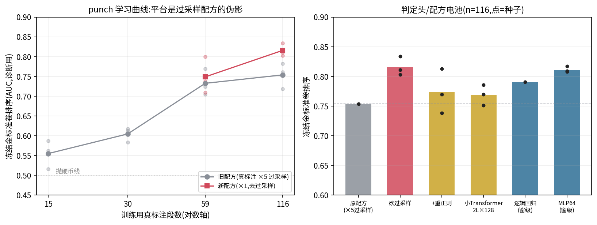
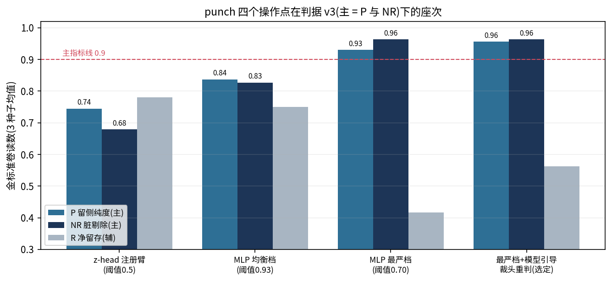

Generated from Markdown source: report/G1_MotionGPT/2026-08-22-punch-line-consolidated-report.md
G1 动作段判定器 — punch 线综合报告:实验、结论与初版清洗流水线
本文取代 2026-08-20 至 08-22 的三篇过程报告(链接见 Appendix,保留为档案),用白话完整 讲清:punch 这条线做了哪些实验、每个实验回答了什么、以及据此定下的初版数据清洗流水线 是什么样。
Conclusion
- 初版可交付流水线(punch 版):每类一个小判定网络逐 0.2 秒给动作打"脏概率",判死线 收到最严;被判死但报警全部集中在开头 1 秒内的段,按报警位置裁掉头、重判一次,通过 则以裁后形态收录。冻结考卷实测:留下的数据 95.6% 干净(P),96.3% 的脏被剔除(NR), 56.2% 的干净段被留存(R)——主指标双过 0.9,待盲测认证。
- punch 此前"越标注越差"的病因查清:训练配方把每条人工标注复制五份,诱导模型背题; 只砍这一个设置,同样数据同样模型,成绩直接上涨,"加标注无效"被证明是配方造成的假象, 学习曲线恢复为每翻倍标注量纯度约 +0.05。
- 判定头架构对比五种方案后定型为最简单的那个:每窗独立打分的小网络。它并非"只看 当下"——实测发现特征编码器给每个 0.2 秒窗的向量实际带着前后各约 0.6 秒的动作信息 (预训练得来);更大的带记忆模型在当前标注量下全部因过拟合落败。
- 三条路线证伪关账:合成增广(五种组合全负,病因 = 机器造的"脏"标签在最关键的语义 含糊带上必然是噪声)、无条件裁头(伤害所有干净段的起始动作,user 否决)、全段 记忆架构(约定标注翻倍后复测)。
Problem and terminology
研究问题:如何把 29,859 段机器人动作数据里"混进了标称动作以外内容"的段自动清出去, 留下尽可能多的干净段——以 punch 类为试验田,把方法打通到可交付。
| Term | 白话定义 |
|---|---|
| 金标准卷 | punch 的冻结考卷:59 段(净 32/脏 27),按现行标准逐段人工标注(含脏的起止时间),永远只用来考试、不进训练。本文全部读数出自这张卷 |
| 窗级判定头 | 把动作切成 0.2 秒小窗,每窗独立输出一个 0~1 的脏概率的小网络(512→64→1);整段的分数 = 所有窗的最高分 |
| 最严档 | 把"分数过线就扔"的线收得很紧的设置;宁可错杀,先保纯度 |
| 裁头重判 | 被判死的段,若模型报警全部位于开头 1 秒内,则按报警终点加 0.3 秒余量把头裁掉,裁后重新打分;通过则以裁后形态收录 |
| P / NR / R | P = 留下的段里真干净的比例;NR = 真脏的段里被剔除的比例;R = 真干净的段里被留下的比例。验收判据(v3):P 与 NR 为主指标,须 >0.9;R 为辅指标,只报告不设线(留多少由下游需求评判) |
| 认证 | 把阈值等全部参数预先定死,再拿一批模型和参数都没见过的标注数据盲测一次,主指标复现 >0.9 才算数。本文读数尚未过此工序 |
Method
九个实验按"最便宜的先做"排成一条链,每个实验的做法与回答:
| 实验 | 做法(白话) | 回答了什么 |
|---|---|---|
| 考卷对半开 | 把手标数据自己切一半训练、一半考试,两边都是可信标签 | 模型其实有分辨力;旧大考卷的"脏侧"混入大量不脏的段,把读数压平了(伪读数) |
| 冻结金标准卷 | 从手标数据切出 59 段永久只考不训 | 此后所有结论可比 |
| 学习曲线 | 15/30/59/116 段标注各训一版(每版 3 个随机种子),考同一张卷 | 旧配方下曲线平;新配方下每翻倍 +0.05,"标注无效"是假象 |
| 配方消融 | 逐个改动训练设置,同数据同卷对比 | 真凶 = 真标注 ×5 复制;砍掉即涨,重正则和缩小模型都无效 |
| 特征探针 | 用最简单的线性分类器直接在特征上区分脏窗/净窗 | 每种脏都分得开(0.82~0.90)——特征和编码器无罪,嫌疑收窄到判定头 |
| 架构对比 | 五种判定头(小 MLP / 大 Transformer / 双向 GRU / ±1 秒卷积 / GRU+增广)同卷同标注 | 小 MLP 每个档位都最好;带记忆的模型样本效率低(有效样本 = 段数而非窗数),先过拟合 |
| 视野实测 | 扰动距特征向量中心不同距离的帧,看向量变不变 | 每个"0.2 秒"向量实际看 ±0.6 秒——小 MLP 自带预训练的局部上下文,并非只看当下 |
| 增广病理 | 合成脏样本喂三种头;再验证合成"脏"与真净段开头在特征上是否可分、误伤堆在哪 | 五种组合全负;机器按"位置"批量造的脏标签,在"动作自己的起势 vs 别的动作的残留"这条只有语义能画的线上必然是噪声 |
| 流水线核算 | 最严档 + 裁头重判组装,逐段按人工标注的真值核账 | P 和 R 同时上涨(见 Results)——被误杀的净段与可修复的脏段都被捞回 |
| Criterion(判据 v3) | Threshold | Measured(3 种子均值) | Verdict |
|---|---|---|---|
| 主:P 留侧纯度 | > 0.9 | 0.956 | 过(未认证) |
| 主:NR 脏剔除 | > 0.9 | 0.963 | 过(未认证) |
| 辅:R 净留存 | 报告不设线 | 0.562 | 产出量待下游评判 |
Run Spec 与判据沿革
NOT PREREGISTERED — 本线为 user 逐步定向的连续探针链,无单一预注册 Run Spec;每个实验
的 user 原话、命令与读数逐条累积于
logs/g1_motiongpt/zhead_multi_punch_real60/evidence_v2cleanexam.json。判据沿革(留痕于
zhead_best_v2_manifest.json):v1 字典序(先 P>0.9 再 R>0.85)→ v2/v2.1 双口径与严格
重度定义(任何他类内容混入不论时长都算重度)→ v3 主辅指标制(本文口径)。
Results
关键实验读数

- 学习曲线(冻结卷分辨力,3 种子均值):15 段 0.555 → 30 段 0.605 → 59 段 0.733 → 116 段(修正配方)0.816;砍 ×5 复制单项增益 +0.062
- 特征探针:五种脏形态在冻结特征上线性可分 0.82~0.90;编码前后几乎无损(0.847 vs 0.850)
- 架构对比(允许挑最优阈值时的最高纯度,留存 ≥0.6 档):小 MLP 0.896 > 大 Transformer 0.850 > 双向 GRU 0.787 > ±1 秒卷积 0.769 > GRU+增广 0.710
- 视野实测:扰动距中心 0.05 秒处向量变化 5.66,0.5 秒处 0.67,0.8 秒外精确为 0
初版流水线与操作点

| 操作点(金标准卷,3 种子均值) | P(主) | NR(主) | R(辅) |
|---|---|---|---|
| 初版流水线:最严档 + 裁头重判(选定) | 0.956 | 0.963 | 0.562 |
| 纯最严档过滤 | 0.930 | 0.963 | 0.417 |
| 均衡档过滤 | 0.837 | 0.827 | 0.750 |
| 注册臂直接判(阈值 0.5,无选参偏置) | 0.745 | 0.679 | 0.781 |
初版流水线交付形态(punch 版,其余类照此复制):
- 输入:一段动作 + 它声称的动作类
- 打分:该类专属的窗级判定头(冻结编码特征 + 512→64→1 小网络,标注约 140 段可训, 单卡数秒)逐 0.2 秒出脏概率
- 三态输出: - 全程低于最严线 → 原样收录 - 报警全在开头 1 秒内 → 裁头重判,通过则裁后收录(约 16% 的收录净段会因此损失 1~1.5 秒起始动作——此为 user 否决的"无条件裁头"伤害的限缩残留) - 其余 → 剔除,并附诊断(报警位置曲线 = 脏在哪)
- 产出预估(净脏比按 1:2 估计,待考卷扩容实测修正):每类约 650–900 段、纯度约 0.95
流水线分量核算(逐种子)
原样收录 14–15 段;裁头重判尝试 22–24 段、救回 8–9 段(其中真有头部残留、裁后全净 3–5 段; 被误杀的净段洗清回池 4–5 段);收录合计 22–24 段,混入脏稳定为 1 段。
Analysis
- 双赢的机制:最严档的错杀集中在段首(模型对"动作自己的起势"和"别的动作的残留"分不清 时宁可报警),裁头重判给了这些段第二次机会——净段洗清回池、脏段修复回池,两侧都增加 留存,而回池段几乎不带脏,纯度同步上升。
- punch 三天的翻转全部依赖"先修尺子再修模型"的顺序:考卷不可信时,一切消融读数都是噪声; 冻结考卷 + 每次只动一个变量,是所有结论可信的前提。
- 合成增广的失败有普适含义:凡是"判定本质上是语义裁定"的模式(起势 vs 残留、变体 vs 正品),机器批量生成的标签必然把裁定简化为可机械计算的代理(位置、时长),在含糊带注入 系统性噪声——这类模式的每一分提升都只能来自人工标注。
- next(到定稿的距离):①认证盲测(参数已预固定:阈值 0.70、余量 0.3 秒;材料用 8443 考卷扩容或下一批标注);②考卷扩容出各类真实净脏比,替换 1:2 估计;③产出量是否满足 下游 planner 训练,user 裁定;④其余 7 类按"扩考卷 → 补标注 → 流水线核算"复制。
Appendix
被本文取代的三篇过程报告(档案)
头条数字代入式与证据路径
- 流水线 P = 收录真净/收录总数 = 23/24 = 0.958(seed0);NR = 1 − 收录脏/27 = 1 − 1/27 = 0.963
- 砍 ×5 复制增益 = 0.816 − 0.754 = +0.062(同数据同卷同架构,唯一改动)
- 学习曲线斜率 = 0.816 − 0.749 = +0.067(59→116 段,恰一个翻倍)
- 证据档(全部实验的 user 原话/命令/读数):
logs/g1_motiongpt/zhead_multi_punch_real60/evidence_v2cleanexam.json及同目录probes/ - 判据与流水线登记:
outputs/g1_motiongpt/zhead_best_v2_manifest.json#acceptance_criteria_v3 / #punch_pipeline_v1 - 金标准卷:
outputs/g1_motiongpt/test_sets/punch_gold_exam_v1.json
已知限制
- 阈值与裁剪余量在金标准卷上选取,读数偏乐观;认证盲测通过前,"主指标双过线"不作对外结论。
- 考卷 59 段,P 的置信区间约 ±0.06;换考卷波动实测 ±0.05。
- 1:2 净脏比为 user 估计,产出量与池配比换算(P≈0.88)均属外推。
- 裁后段按人工标注区间判净,未逐段复看裁后视频;起势损失对下游训练的影响未实测。
- 其余 7 类的复制尚未开始:handshake 训练标注为 0,kick 缺净侧标注,均需先扩考卷再定量。